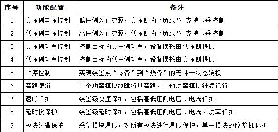

CSD-347C直流配网控保装置，是一种用于实现直流配网直流母线&线路保护的设备。
该装置位于站控层，采集就地数据和信号，运用可视化逻辑，实现各端口母线保护功能及远距离光差保护，有效保护直流配网系统及设备安全。
该装置向上能以以太网通过IEC61850与直流配网的监控、远动等设备通信，向下能通过IEC60044-8-FT3口与直流断路器控制系统、MMC/DAB控制系统通讯,执行保护动作行为出口，快速隔离故障。
装置构成
装置采用功能模块化设计思想，功能模块标准化。由CPU插件、管理插件、开入插件、开出插件、GOOSE插件、LOGIC插件、电源插件等构成。X0 CPU板主要负责模拟量的采集及预处理、支流断路器通讯，X2 CPU负责光差信号接入及预处理，逻辑板负责控制保护逻辑的搭建，DI板负责开关量信息的采集、DO板负责输出刀闸的控制指令。

功能配置

装置主要特点
1) 保护覆盖所有直流母线及线路区域，无保护死区。
2) 装置链路延时小于300us，确保保护动作的可靠快速响应。
3) 每台装置最多可支持多达11个端口母线差动保护，满足多端、复杂的直流配网系统保护需求。
4) 每个端口支路均配置带方向的过流保护，快速隔离故障支路，防止动作行为扩大。
5) 通过电流方向控制字，可设置电流方向，方便灵活适配现场采样设备安装。
6) 可支持3个3端口，1个2端口远距离光差保护，满足直流配网长线路保护需求。
7) 可支持多达8路通过IEC60044-8-FT3协议接入的直流断路器，以及32路通过硬接线接入的直流断路器跳闸，无需扩展装置，及时响应保护动作执行。
8) 通过站控LAN网、IEC60044-8-FT3、104规约等接入MMC/DAB控保系统，在保护系统动作后，通过跳闸矩阵配置，快速申请闭锁设备。
9) 当电流采样值饱和异常，通过封顶电流设置，闭锁该支路过流保护功能，有效避免因电流采样CT异常而误动。